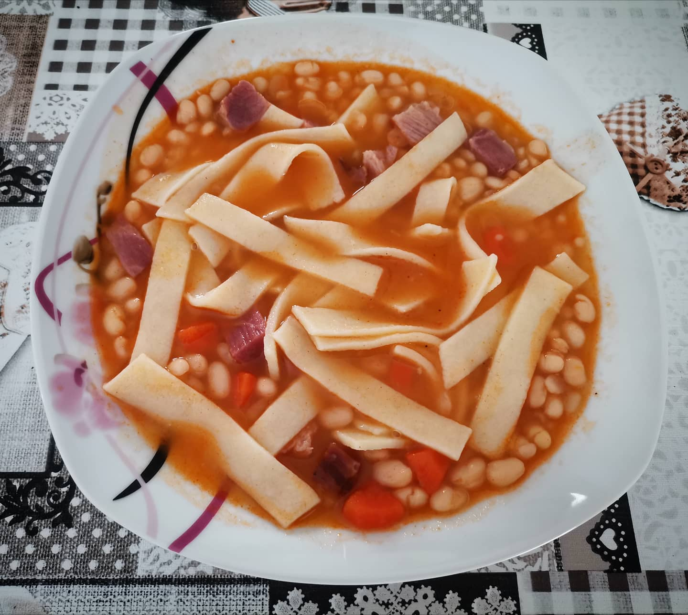

Domáce rezance podľa @torty_od_lulu — Normy Jedál
Dneska fazuľová polievka s údeným mäsom a domácimi širokými rezancami
#dnesjem #fazulovapolievka #domacerezance #fazuľovápolievkasúdenýmmäskom
#beansoup #beansoupwithsmokedmeat
#homemadewidenoodles #todayeating
#lunchtime #lunchtoday #lunchoftheday #🍲